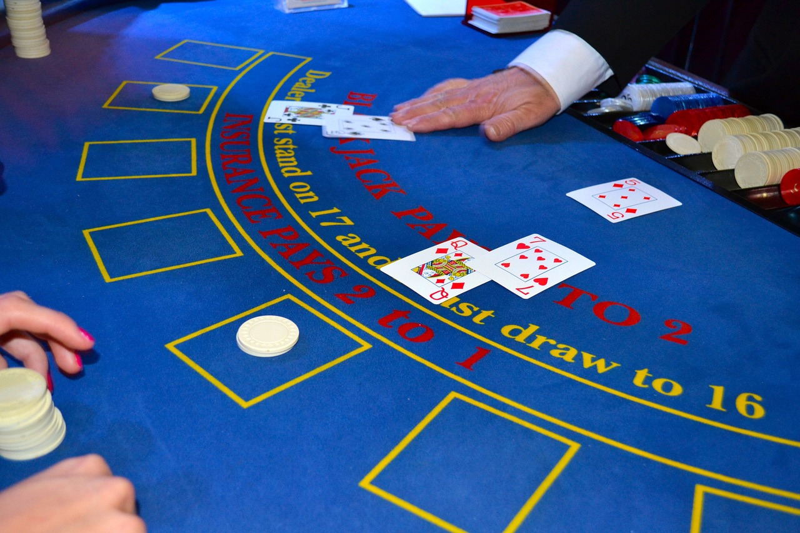

Blackjack

Blackjack (formerly Black Jack and Vingt-Un) is a casino banking game. The most widely played casino banking game in the world, it uses decks of 52 cards and descends from a global family of casino banking games known as Twenty-One. Blackjack players do not compete against each other. The game is a comparing card game where each player competes against the dealer. Retrieved from https://en.wikipedia.org/wiki/Blackjack on March 10, 2022